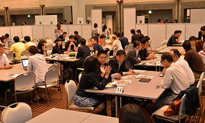
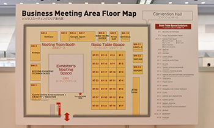
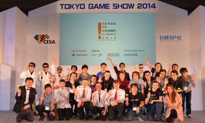
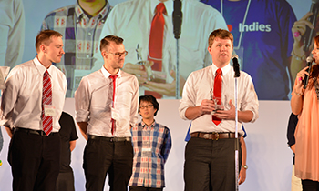
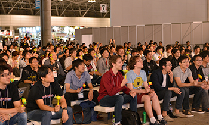
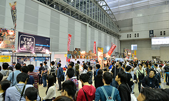
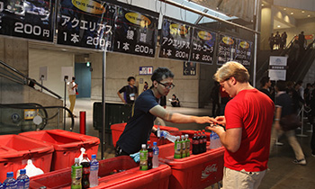
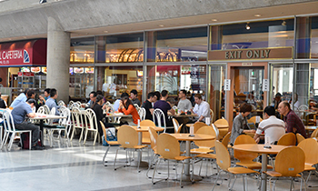

![Business Day 2015.9.17[Thu]-18[Fri] Public Day 2015.9.19[Sat]-20[Sun] @ Makuhari Messe](../../../en/common/images/sp_date_en.png)
![TOKYO GAME SHOW 2015
Business Day 2015.9.17[Thu]-18[Fri] Public Day 2015.9.19[Sat]-20[Sun] @ Makuhari Messe](../../../en/common/images/maintitle_en.png)


※We recommend that you get an idea of the look and feel of Tokyo Game Show 2015 (TGS2015) in advance. Photos from TGS2014 are included to help you form a mental picture. Please note, however, that there will be some differences between TGS2015 and TGS2014, so the photos are for reference purposes only.
The TGS2015 venue will be extremely crowded. We recommend that you confirm the locations of exhibits and the exhibited content in advance through the TGS2015 official website, make use of the official catalogs offered at venue entrances, etc., or utilize the official app that can be downloaded free of charge.
This year, TGS will be utilizing all of the exhibition halls at Makuhari Messe (Halls 1 - 8 on the south side, and Halls 9 - 11 on the north side). However, the Family Area (Hall 1), Cosplay Area (Hall 9), Cyber Games Asia Area (Hall 10) and TGS Grand Lottery Area (Hall 10) will only be open on Public Day.
You can check information in advance. Please see the latest news regarding media partners and exhibitors, which are updated as needed on the official website’s homepage.
A map of the venue will also be published on the official website shortly before TGS2015 is held (scheduled to be included in the exhibitor list page). An official app (iOS and Android) that will enable you to search the locations of exhibitors at the venue will also be made available shortly before the start of TGS2015. (An outline of the app is scheduled to be included in the exhibitor list page).
The official SNS accounts for Tokyo Game Show 2015 are as follows:
・Twitter：「Tokyo_Game_Show」
・Facebook：「Tokyo_Game_Show」
If you would like to meet an exhibitor on Business Day, we encourage you to utilize the Asia Business Gateway, a “matching system” available on the official TGS2015 website that visitors can use to set up meetings with an exhibitor during TGS2015. Use of the system is free of charge.
By registering to use this system, Business Day visitors will be able to search technologies, products, services and other information related to exhibitors, contact the relevant persons at an exhibitor, and request an appointment for a meeting on Business Day.


Furthermore, starting from this year, the TGS will be offering a limited number of Premium Lounge memberships that will allow meetings in a quiet atmosphere. Meetings can even be set up with other Business Day visitors using the aforementioned online appointment system (Asia Business Gateway). See Admission to Business Day, September 17 (Thu.) and 18 (Fri.) for details on how to apply for membership.
Visitors who apply for and receive Premium Lounge Membership will be able to use the Premium Lounge meeting area that will be set up on the second floor of the International Conference Hall.
Sense of Wonder Night 2015 , an event for discovering new game ideas, will be held on the second day of Business Day (Sept.18) from 2:30 p.m. to 5:00 p.m. at the stage on the south side of the Cyber Games Asia Area in Hall 10. Presentations will be given on 10 game titles that were selected from numerous entries from around the world for best giving forth a “sense of wonder.” Winners of various awards will be announced during this event. All Business Day visitors are free to attend this event (free of charge). Also, you can meet with SOWN presenters at the Indie Game Area.



There are no cloakrooms available within the International Exhibition Halls. However, there are coin-operated storage lockers at the second-floor concourse and other locations. Please note that all coin-operated lockers may be in use when you go; there is no guarantee that an empty locker will be available.
The official TGS2015 website and official guidebook handed out during admission are written in four languages other than Japanese (English, Hangul, simplified Chinese and traditional Chinese), with a portion available only in Japanese.
The languages other than Japanese used at each booth will differ according to the exhibitor.
International students are scheduled to be present at locations such as the information booths to serve as volunteer interpreters. They will be wearing pink T-shirts identifying them as “language supporter.” If you experience any language-related difficulties, please feel free to ask them for assistance.
We ask that all visitors turn off the power on their mobile routers as well as turn off the Wi-Fi functions on smartphones, handheld game consoles, etc., when inside the Makuhari Messe International Exhibition Halls 1 - 8 (See “For your attention”).
This is because the sudden increase of recent years in the number of mobile devices in use has been creating a poor radio wave environment within the exhibition halls. This can have an adverse effect on the demonstrations and trial game-playing taking place at the venue. If you would like to use wireless LAN, there will be a Wi-Fi hotspot (free of charge) available on the second-floor concourse (near the escalator) of Halls 1 – 8.
Rules related to taking photographs or shooting videos at booths differ according to the exhibitor. Please follow the respective rule of the booth (some booths prohibit the shooting of photos and videos).
Furthermore, please be aware that videotaping and photo-taking by the mass media (e.g., TV, newspapers and magazines) and the TGS2015 Management Office will be taking place throughout the venue for news or record-keeping purposes. Please be forewarned that your likeness may appear in these shots.
This year, the Food Court will be located in Hall 11. The available menus, etc., will be published on the official website immediately before the start of TGS2015.
A beverages area will also be set up within Halls 1 – 8. Restaurants (see Map here) and concession stands, etc., are also located on the second-floor concourse. There are also restaurants in the Makuhari Messe vicinity (see Map here).



Smoking is prohibited at the venue except at specially designated areas (designated smoking areas are located at the second-floor concourse of Halls 1 -8 and other areas).

2002-2015 CESA / Nikkei Business Publications, Inc. All rights reserved.